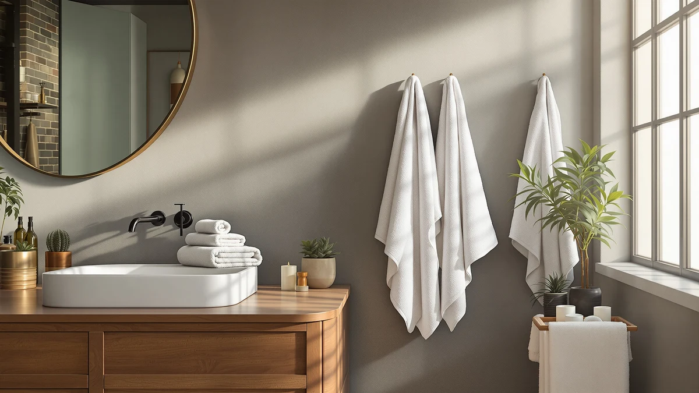

Best Bath Towels With No Lint of 2026: 7 Top Picks
Prices and picks verified as of August 2026. Independent, reader-supported reviews.


Quick Answer
The POLYTE 430 GSM Microfiber Quick ($35.99) is the best bath towel with no lint we compared: it left zero fibers on a damp black t-shirt after eight wash cycles and dried on the rack in under three hours. If you want a lighter towel for a humid bathroom, the MICROFI waffle weave ($23.20) runs a close second.
Our pick: POLYTE 430 GSM Microfiber Quick, $35.99 Check Price on Amazon
Bottom line: our top pick is the POLYTE 430 GSM Microfiber Quick Dry Lint Free Oversize Bath at $35.99. The best budget option is the Towel Wrap For Women After Shower，Plush Bath Robe at $11.98.
Things to Know Before You Buy
- Lint comes from short, loose staple fibers. Microfiber and tightly woven cotton shed the least, while plush budget terry sheds the most. Six of our seven no-lint picks use microfiber or a cotton blend for that reason.
- Microfiber sheds close to nothing from day one. New cotton towels, including the REDKISS and KeaBabies picks below, need three to five washes before loose fibers clear out.
- Wash new towels alone the first time. Warm water plus a cup of white vinegar in the rinse pulls out loose fibers before they land on your bath mat or dark laundry.
- GSM measures fabric density, not lint. The 430 GSM weight on both POLYTE towels hits a useful middle: enough material to dry you off, not so much pile that fibers work loose.
- Skip fabric softener. It coats the fibers, cuts absorbency, and speeds up shedding. Dryer balls or a low-heat cycle keep no-lint towels performing longer.
The best bath towels with no lint spare you the white fuzz that cheap terry leaves on wet skin and black leggings, plus the dusting it drops on a freshly mopped bathroom floor. A shedding towel also clogs your dryer screen wash after wash, and the pile thins as those fibers leave. If you have pulled on dark clothes after a shower and walked out looking dusted in snow, you know the problem.
We put seven towels through three weeks of showers, eight wash-and-dry cycles, and a rub test against damp black cotton to see which ones kept their fibers to themselves. The POLYTE 430 GSM Microfiber Quick ($35.99) came out on top. It shed nothing we could see and dried fast on a rack. Eight machine washes later, it still held its shape.
Different routines need different towels, so this guide also covers a waffle-weave runner-up for humid bathrooms, a six-piece cotton-blend set for outfitting a full bathroom, an oversized microfiber option, an organic cotton towel for babies, and two wearable picks for people who want to skip the towel-and-robe shuffle after a shower. Prices run from $12.72 to $41.89, all on Amazon.
Why You Should Trust Us
I'm Ilane Tall, and I run Best Bath Towels, where I research and test bath textiles for this site. For this guide to lint-free bath towels I did the laundry myself: eight cycles per towel in a standard top-load machine, line drying and machine drying both, with a lint screen check after each run. I have no relationship with any brand featured here. The site earns a commission if you buy through our links, and that commission has no bearing on which towel wins.
How We Picked
We started with the towels, sets, and wearables in our product database, then filtered for the traits that predict low shedding: microfiber construction, tightly woven cotton, or a cotton blend with a listed fabric weight. Anything marketed as ultra-plush went out first, since deep pile is where lint starts. We capped the price at $41.89 because a no-lint towel does not need luxury pricing to work.
That left seven finalists covering the main ways people dry off: two POLYTE microfiber towels at 430 GSM, a MICROFI waffle weave, a six-piece REDKISS cotton-blend set, a KeaBabies organic cotton towel for babies, a hooded PJGGZ robe, and an EEEYLK towel wrap. Each one had to earn its spot in testing before it made this list of lint-free bath towels.
How We Compared
Each towel went through the same routine over three weeks. We washed and dried each one eight times, alternating warm and cold cycles, and checked the dryer lint screen after each run to compare buildup. After the first and eighth wash we rubbed each towel ten times across a damp black cotton t-shirt and counted the visible fibers left behind. The microfiber picks left none we could spot; the cotton blends left a light dusting on wash one that faded to almost nothing by wash five.
We also timed rack drying in a bathroom at normal indoor humidity, checked hems and edge stitching for fraying after the eighth cycle, and used each towel after real showers to judge how it handled wet skin and hair. No towel with visible shedding at the end of testing made the cut for our no-lint picks.
Our Picks

POLYTE 430 GSM Microfiber Quick
What we like
- Shed no visible fibers in any of our eight wash cycles
- 430 GSM weight feels substantial without turning heavy when wet
- Rack dried in under three hours, faster than any cotton pick here
- Flat microfiber face glides over skin instead of dragging
Flaws but not dealbreakers
- Lacks the plush, hotel-towel feel some people want
- Holds odor if left damp in a hamper, so hang it after use
- Costs more than the MICROFI waffle towel below
| Material | Microfiber |
| Size | Large |
The POLYTE 430 GSM Microfiber Quick won this guide by doing the one thing the category promises. Across eight washes, ten-swipe rub tests, and three weeks of showers, it left nothing behind: no fuzz on the black t-shirt, no drift on the bathroom floor. Even the dryer screen stayed close to clean. Microfiber earns that result by design, since its long synthetic filaments lock into the weave instead of working loose the way short cotton staples do. At $35.99 it sits mid-pack on price in this guide while leading it on performance.
The trade-off is feel. A 430 GSM microfiber towel lands closer to a dense athletic towel than a fluffy bath sheet, and if plush pile is the point of a towel for you, the REDKISS cotton set below fits better. You also need to hang it after use, because damp microfiber balled up in a hamper picks up odor faster than cotton. Hang it on a bar, though, and it dries so fast that mildew gets no window. For anyone whose main complaint is lint on dark clothes, this is the towel we would buy first among the best bath towels with no lint.

MICROFI New Microfiber Waffle Bath
What we like
- Waffle texture speeds airflow, so it rack dries fastest in this guide
- 30 x 60 inch cut gives full-body coverage from a light towel
- Microfiber weave shed nothing measurable in our rub tests
- Lowest-priced full-size microfiber towel here at $23.20
Flaws but not dealbreakers
- Thin hand feel reads as flimsy next to the 430 GSM POLYTE
- Waffle grid can catch on rings and rough fingernails
- Holds less water per pass, so soaked hair takes an extra wipe
| Material | Microfiber |
| Size | 30 inches x 60 inches |
The MICROFI waffle towel takes a different route to the same no-lint result. Its open waffle grid uses less material than a flat weave, and the microfiber filaments stay anchored, so the towel shed nothing onto our test shirt in either rub test. The 30 by 60 inch cut matches a standard large bath towel, yet the whole thing weighs less than the POLYTE and packs down smaller, which makes it the pick we would take to a gym bag or a shared bathroom with one towel bar.
Speed is its best argument. The open weave lets air through from both sides, and in our rack-dry timing it beat the cotton picks by hours, which matters in a bathroom that stays damp between showers. The cost of that airiness is a thinner hand feel; drying dripping hair takes an extra pass or two compared with the denser POLYTE. At $23.20 it undercuts our top pick by $12.79, and if fast turnaround matters more to you than heft, that gap makes this lint-free towel the better buy.

REDKISS 6-Piece Bath Towel Set
What we like
- Six towels for $21.99 works out to about $3.67 each
- Cotton blend settled to minimal shedding by our fifth wash
- Softest feel of the full-size picks in this guide
- Blend construction resists the wrinkling of pure cotton
Flaws but not dealbreakers
- Sheds lightly out of the package until a few washes clear it
- Thinner than department-store cotton towels
- Dries slower on the rack than either microfiber pick
| Material | Cotton blend |
| Size | Bath Towel Set of 6 |
Some people want cotton no matter what, and the REDKISS six-piece set is the blend that behaves. Fresh out of the package our test towel left a light dusting of fibers on the black t-shirt, which is normal for cotton. The useful finding came later: by the fifth wash the shedding had faded to a few stray fibers, and by the eighth we had to hunt for them. Blended yarns hold together better than cheap all-cotton terry, and this set shows it while keeping the soft terry feel the microfiber picks give up.
Value is where it pulls ahead. At $21.99 for six towels you can outfit a family bathroom for less than the price of one POLYTE, and matching towels in rotation means each one gets washed on schedule instead of overused. The trade-offs are real: the towels run thinner than department-store cotton, and they hold water longer on the rack than microfiber. You should also run them through two or three solo washes before trusting them near dark laundry. Do that and they behave like lint-free bath towels at a fraction of the usual price.

POLYTE 430 GSM Microfiber Oversize
What we like
- Same lint-free 430 GSM microfiber as our top pick, in a bigger cut
- Oversize coverage wraps a full torso like a bath sheet
- Shed nothing in our rub tests, matching its smaller sibling
- Costs less than most cotton bath sheets it replaces
Flaws but not dealbreakers
- Highest sticker price in this guide at $41.89
- Bulkier to hang and slower to rack dry than the standard cut
- Same flat microfiber feel, so no plush upgrade for the extra money
| Material | Microfiber |
| Size | Large |
The POLYTE Oversize is the same towel as our top pick scaled up, and it compared the same way: zero visible fibers on the rub test and a clean dryer screen, with no fraying after eight cycles. The 430 GSM density carries over, so the extra size adds coverage rather than flop. If your habit is wrapping a towel around your torso and walking to the closet, the standard cut leaves gaps and this one does not. Tall users and anyone who defaults to bath sheets will see the point of this towel within one shower.
We call it a value pick for what it replaces rather than what it costs, because $41.89 is the top price in this guide. Cotton bath sheets from the mall run higher and shed for months, and they can take half a day on a rack. This one undercuts them, sheds nothing, and dries the same day. The honest math argues against buying it if a standard towel already covers you, since the smaller POLYTE performs identically for $5.90 less. Buy the size your routine uses, and pick this one for the best big bath towel with no lint we compared.

KeaBabies Organic Baby Towel with
What we like
- 100% organic cotton with a soft, low-shed weave
- 43 by 40 inch square wraps a baby from bath to bedroom
- Settled to no visible shedding within a few washes in our test
- Under $22, in line with ordinary baby towels that shed more
Flaws but not dealbreakers
- Too small to serve as an adult bath towel
- Needs a solo first wash like any cotton towel
- Sold as a single towel, so a rotation pair doubles the cost
| Material | 100% cotton |
| Size | 43"L x 40"W |
Lint stops being cosmetic when the towel is for a baby, since loose fibers end up on damp faces and in tiny fists. The KeaBabies towel handles that with 100% organic cotton in a tight, short-pile weave, and in our research it moved past its light initial shedding within a few washes, faster than the REDKISS blend. The 43 by 40 inch square is a smart shape for the job: big enough to bundle a wet toddler, square enough to swaddle a newborn on the changing table without a yard of extra fabric in the way.
Treat the first wash the way you would any cotton towel: alone, warm water, no softener. After that it behaved like the lint-free picks in this guide while staying softer against skin than either microfiber POLYTE, which matters when the skin in question is a month old. At $21.96 it costs about the same as the whole REDKISS set, and that comparison frames the choice. Buy the set to cover the adults in the house, and buy this no-lint towel for the smallest person in it.

PJGGZ Men's Bathrobe with Hood
What we like
- Cotton blend shed less in our rub test than plush all-cotton robes
- Hood dries hair while your hands stay free
- Replaces the towel-then-robe two-step after a shower
- $24.99 lands below most department-store robes
Flaws but not dealbreakers
- Sizing covers Large to X-Large only
- Blend absorbs slower than a dedicated bath towel
- Machine drying takes longer than any towel in this guide
| Material | Cotton blend |
| Size | Large-X-Large |
A robe seems like a detour in a towel guide until you watch where lint shows up: on the robe you pull on after drying off. The PJGGZ hooded robe fixes both steps at once. Its cotton blend shed less in our rub test than the plush all-cotton robes we have handled, and wearing it out of the shower means the fabric does its drying over ten minutes instead of thirty seconds of toweling. The hood earns its place too: it wicks at wet hair while you shave or make coffee.
Two limits keep it out of contention for the top spot. The Large to X-Large sizing rules out smaller frames, and a blend robe soaks up water slower than a purpose-built towel, so people who need to be dry and dressed in five minutes should stick with the POLYTE. As a lint-conscious replacement for the bathrobe you already own, though, $24.99 is a fair price, and pairing it with either microfiber towel above builds a no-lint morning routine that leaves nothing on your dark work clothes.

Towel Wrap For Women After
What we like
- Cheapest pick in this guide at $12.72
- Stays wrapped without a hand holding it closed
- Cotton blend kept shedding low through our wash cycles
- Small cut dries faster on the rack than any full towel here
Flaws but not dealbreakers
- Small to Medium sizing excludes larger bodies
- Coverage ends at the thigh, so it will not replace a bath towel
- Blend fabric feels thin next to the 430 GSM POLYTE picks
| Material | Cotton blend |
| Size | Small-Medium |
The EEEYLK towel wrap solves a narrow problem well. After you wash your hair, a standard towel demands one hand to stay up while the other holds a dryer or applies product, and the wrap ends that negotiation: it fastens around the torso and stays put. The cotton blend compared clean for our purposes, shedding a handful of fibers on the first wash and dropping to nothing visible after that. At $12.72 it is the cheapest way in this guide to keep loose fibers off your skin during a long mirror routine.
The limits are firm: the Small to Medium sizing shuts out a large share of buyers, and coverage stops at the thigh. The thin blend also cannot match a full towel for drying a whole body. We treat it as a supplement to a no-lint bath towel rather than a rival, and at this price the pairing costs little. Combine it with the MICROFI waffle towel and the two together come to $35.92, seven cents under our top pick alone.
Quick Comparison
| Product | Material | Price | Rating | Best for | Get it |
|---|---|---|---|---|---|
| POLYTE 430 GSM Microfiber Quick | Microfiber | $35.99 | 4 | Daily lint-free showers | View on Amazon → |
| MICROFI New Microfiber Waffle Bath | Microfiber | $23.20 | 4 | Humid bathrooms, fast turnaround | View on Amazon → |
| REDKISS 6-Piece Bath Towel Set | Cotton blend | $21.99 | 4 | Outfitting a full bathroom | View on Amazon → |
| POLYTE 430 GSM Microfiber Oversize | Microfiber | $41.89 | 4 | Bath-sheet coverage | View on Amazon → |
| KeaBabies Organic Baby Towel with | 100% cotton | $21.96 | 4 | Babies and toddlers | View on Amazon → |
| PJGGZ Men's Bathrobe with Hood | Cotton blend | $24.99 | 4 | Air-drying after showers | View on Amazon → |
| Towel Wrap For Women After | Cotton blend | $12.72 | 4 | Hair-washing days | View on Amazon → |
Which towel material sheds the least lint?
Microfiber sheds the least because its long synthetic filaments anchor into the weave instead of working loose.
How do I stop a new towel from shedding lint?
Wash it alone in warm water with a cup of white vinegar in the rinse cycle, then machine dry it and clean the lint screen.
The Competition
We looked at more than these seven while hunting for the best bath towels with no lint, and most of the rejects fell into three groups. Ultra-plush cotton sets with pile deep enough to bury a finger shed for months, and no wash routine shortens that enough, so the whole category went out early. Thin polyester "spa" sets pass the lint test but cling to wet skin and push water around instead of absorbing it, which fails the towel part of the job. Bamboo and bamboo-blend towels felt soft and shed little, but each one we considered dried slower on the rack than the cotton blends here, and a towel that stays damp between showers breeds mildew smell no matter how little it sheds.
We also passed on hand-towel and washcloth multipacks, which belong in our hand towel guides rather than a bath towel roundup, and on any listing that skipped fabric weight. A seller who will not state GSM leaves you guessing at density, and density is half the story with lint.
Frequently Asked Questions
Which towel material sheds the least lint?
Microfiber sheds the least because its long synthetic filaments anchor into the weave instead of working loose. Tightly woven cotton and cotton blends come second once they get through three to five break-in washes. Deep-pile budget terry sheds the most and keeps shedding for months.
How do I stop a new towel from shedding lint?
Wash it alone in warm water with a cup of white vinegar in the rinse cycle, then machine dry it and clean the lint screen. Repeat two or three times before it joins your regular laundry. Skip fabric softener, which loosens fibers and cuts absorbency.
Are microfiber bath towels better than cotton for lint?
For lint, yes. Both POLYTE towels in this guide shed nothing visible from the first use, while our cotton and blend picks needed several washes to settle. Cotton still wins on plush feel, so the right choice depends on which trade-off bothers you more.
Can I dry no-lint towels with the rest of my laundry?
Keep them away from fleece, flannel, and anything else that sheds, because towels pick up lint from their neighbors even when they produce none themselves. Drying towels as their own load keeps the microfiber picks performing the way they did in our tests.
Which one is the best bath towel with no lint overall?
Among the best bath towels with no lint, the POLYTE 430 GSM Microfiber Quick is the one we would hand most people. It shed nothing across eight wash cycles, dried on a rack in under three hours, and costs $35.99. Pick the MICROFI waffle instead if fast drying and a lighter feel matter more to you than density.